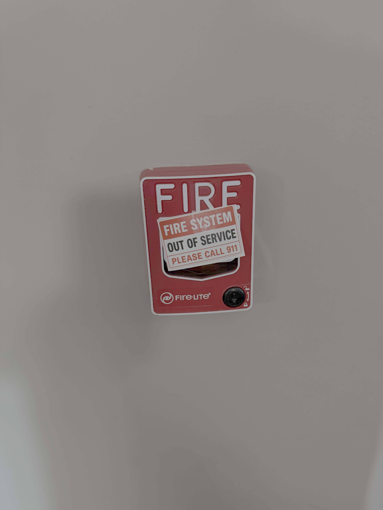
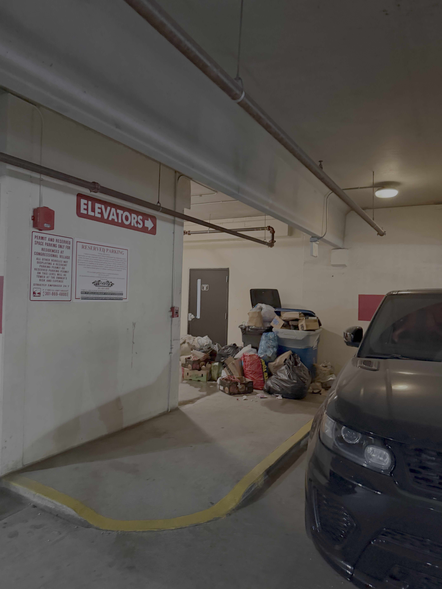

{kind=link}
{kind=link}
APR 06 · 2026
Routine fire alarm
Indexed dispatch near Halpine Road, naming Paramedic 703 Bravo and Tower 703.
Open source record ↗Public evidence index · Rockville, Maryland
A dated, source-linked guide to reported fire-alarm activity, the April 18, 2026 fire, contemporaneous safety communications, public reporting, and Rockville records associated with Residences at Congressional Village, 198 Halpine Road.
01 · Chronology
This is the navigation spine for the dossier. The entries identify the source type so firsthand communications, public reporting, resident accounts, and official records are not blended together.
City permit lists record a trash-chute smoke-detector/programming repair and emergency repairs for leaking 4-inch fire-suppression piping at 198 Halpine Road.
The City list records emergency repairs to fire-pump test-header valves, a trash-room flow switch, and a P4 parking-garage drum drip.
Public CrimeRadar record for a Congressional Village residence.
News reports describe the fire; a separate public dispatch record is indexed for the date. The sources do not establish fire cause.
A user-supplied CrimeRadar link identifies another RCV-related entry; the visible source URL contains an “Alpine” spelling error.
Contemporaneous correspondence describes alarms, posted emergency notices, smoke, and trash conditions; photographs were sent in the thread. The original emails remain private evidence.
A user-supplied CrimeRadar link identifies another Congressional Village fire-alarm record.
A Nextdoor post reports frequent alarms and asks where to complain. It is resident/community reporting, not independent technical verification.
02 · Evidence
The categories below answer different questions. Read the firsthand material first, then use public and official sources for corroboration and follow-up.
Firsthand / management correspondence
These public copies were attached to the May 2026 safety correspondence and were taken after the April 18 fire. The preserved originals remain separate; public copies have been stripped of identifying metadata.



Public dispatch references
Indexed dispatch near Halpine Road, naming Paramedic 703 Bravo and Tower 703.
Open source record ↗Indexed dispatch near Halpine Road, naming Engine 700-23 and Rescue Squad 703. This record does not determine cause.
Open source record ↗User-supplied source; exact transcript should be checked against the original page.
Open source record ↗User-supplied source identifying another Congressional Village dispatch.
Open source record ↗News, reviews, and community reports
News coverage is secondary reporting. Platform reviews and social posts are personal accounts or allegations and are not independently verified.
Hoodline and The MoCo Show report a third-floor fire, sprinkler activation, an older woman hospitalized, and about eight displaced units. Bethesda Magazine was supplied as an additional source.
Hoodline ↗The MoCo Show ↗Bethesda Magazine ↗Reviews report recurring alarms, cooking-triggered alarms, nighttime alarms, maintenance delays, communication problems, trash-room odor, and move-out disputes. These are attributed reports, not findings.
ApartmentRatings ↗ForRent ↗Yelp listing ↗The authenticated Nextdoor source view confirmed the RCV alarm post; the original Gmail digest remains the preserved evidence copy. The Instagram source was supplied separately.
Nextdoor post ↗Instagram source ↗Short excerpts
“fire alarms constantly going off at all times”ApartmentRatings · former resident · Nov. 4, 2025View source ↗
“Constant fire alarms (especially at night)”ApartmentRatings · current resident · Sept. 19, 2024View source ↗
“fire alarm is way too sensitive”ForRent/Apartments.com-surfaced reviewView source ↗
“false building-wide fire alarms a few times every month”ForRent/Apartments.com-surfaced reviewView source ↗
“trash room extremely smelly and poorly maintained”ForRent/Apartments.com-surfaced reviewView source ↗
“ALL THE TIME AT ALL HOURS OF THE NIGHT”Nextdoor post · displayed September 2026View source ↗
03 · Official records
The City of Rockville’s published permit lists show five fire-protection repair permits associated with 198 Halpine Road and Terra Funding-RCV LLC. Permit records are not pass/fail inspection reports, Notices of Violation, or proof that a repair resolved resident reports.
Emergency repair to replace a smoke detector in Building 14’s trash chute and change programming from ionization to photoelectric.
Official April publication ↗Emergency repair to replace three pieces of 4-inch piping and fittings after pinhole leaks near the P-1 parking garage.
Official June publication ↗Emergency repair to replace one 21-foot section of 4-inch piping in the P-1 compact-car area.
Official July publication ↗Emergency repair to replace one 21-foot section of 4-inch piping in the P-2 compact-car area.
Official July publication ↗Emergency repairs to fire-pump test-header valves, a trash-room flow switch, and a P4 parking-garage drum drip.
Official January publication ↗Use Rockville’s permit/property-history search and public-records process to seek inspection reports, correction notices, complaints, violation reports, rental inspection records, and closeout documents for these permit numbers and the April 18, 2026 fire.
Dossier permit index ↗Rockville permit/property-history search ↗Rockville public-records request ↗Request tracking ↗04 · Sources and method
Private Gmail correspondence and attached photos are preserved separately. The site displays public working copies of the photos only.
Dispatch links, news, reviews, Nextdoor, and Instagram are linked where used. Short excerpts remain attributed.
Permit index and the City links above support follow-up on inspections and enforcement records.
Property identification
For identification and cross-reference, the property’s public website is maintained by Allegiant-Carter.